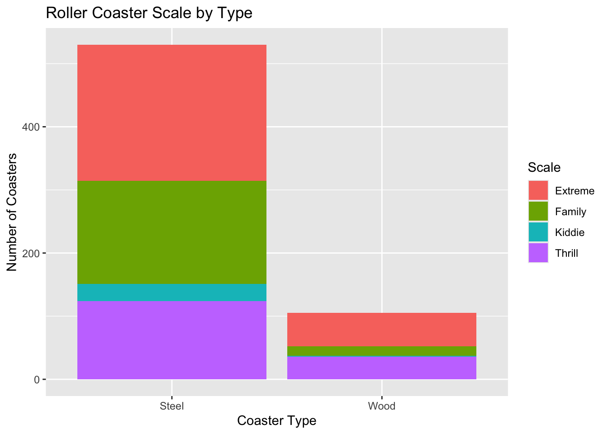
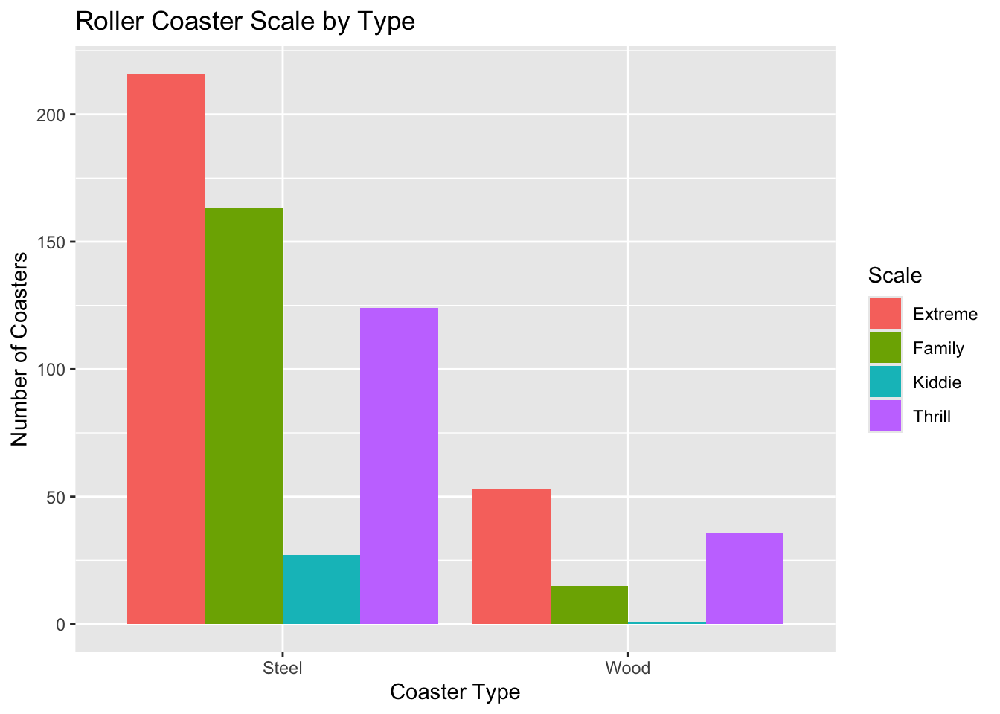

# Normally we would use gitignore to hide this
#| echo: false
myKeyGoesHere <- "26dc28fdf1374e47b762eb5b27036960"Ryan’s HW5
Task 1: Querying an API and a Tidy-Style Function
We connect to newsapi.org for recent news.
library(httr)
# Establishing present date - avoiding 30-day limitations of free account with newsapi
from_date <- Sys.Date() - 30
# Grabbin recent news on the weather
news_result <- GET(paste0(
"https://newsapi.org/v2/everything?",
"q=weather&",
"from=", from_date, "&", # This checks 30 days in the past from present
"language=en&",
"pageSize=50&",
"apiKey=", myKeyGoesHere
))Using this result we parse it for the content.
library(jsonlite)
library(tidyverse)── Attaching core tidyverse packages ──────────────────────── tidyverse 2.0.0 ──
✔ dplyr 1.2.1 ✔ readr 2.2.0
✔ forcats 1.0.1 ✔ stringr 1.6.0
✔ ggplot2 4.0.3 ✔ tibble 3.3.1
✔ lubridate 1.9.5 ✔ tidyr 1.3.2
✔ purrr 1.2.2
── Conflicts ────────────────────────────────────────── tidyverse_conflicts() ──
✖ dplyr::filter() masks stats::filter()
✖ purrr::flatten() masks jsonlite::flatten()
✖ dplyr::lag() masks stats::lag()
ℹ Use the conflicted package (<http://conflicted.r-lib.org/>) to force all conflicts to become errors# Parse
parsed <- fromJSON(rawToChar(news_result$content))
# Storing as tibble
articles <- as_tibble(parsed$articles)
articles# A tibble: 44 × 8
source$id $name author title description url urlToImage publishedAt content
<chr> <chr> <chr> <chr> <chr> <chr> <chr> <chr> <chr>
1 the-verge The … Justi… Goog… "Google is… http… https://p… 2026-09-03… "<ul><…
2 wired Wired Kat M… The … "I found d… http… https://m… 2026-08-25… "Night…
3 bbc-news BBC … Steph… Lawr… "Dan Lawre… http… https://i… 2026-08-29… "Secon…
4 bbc-news BBC … Tomas… Yell… "The Met O… http… https://i… 2026-08-25… "Yello…
5 <NA> Gizm… Matth… Reco… "Built off… http… https://g… 2026-08-27… "Three…
6 <NA> Gizm… Bruce… Goog… "The tech … http… https://g… 2026-09-03… "In th…
7 <NA> Gizm… Matth… Scie… "Synergy b… http… https://g… 2026-09-14… "Somet…
8 bbc-news BBC … Sarah… Warm… "A stronge… http… https://i… 2026-09-14… "Forec…
9 bbc-news BBC … Ben R… Is a… "Temperatu… http… https://i… 2026-09-11… "Compu…
10 the-verge The … Justi… Bein… "It's 8:52… http… https://p… 2026-08-26… "<ul><…
# ℹ 34 more rowsBelow is a function for a user to query these results
query_news <- function(search_term, from_date, api_key) {
result <- GET(paste0(
"https://newsapi.org/v2/everything?",
"q=", search_term, "&",
"from=", from_date, "&",
"language=en&",
"pageSize=50&",
"apiKey=", api_key
))
parsed <- fromJSON(rawToChar(result$content)) # Parsing as before
articles <- as_tibble(parsed$articles) # Tibble as before
return(articles)
}We define two queries to test the function.
query1 <- query_news("weather", as.character(Sys.Date() - 30), myKeyGoesHere)
query2 <- query_news("sports", as.character(Sys.Date() - 30), myKeyGoesHere)And here are the results of the queries.
# First query about weather
query1# A tibble: 44 × 8
source$id $name author title description url urlToImage publishedAt content
<chr> <chr> <chr> <chr> <chr> <chr> <chr> <chr> <chr>
1 the-verge The … Justi… Goog… "Google is… http… https://p… 2026-09-03… "<ul><…
2 wired Wired Kat M… The … "I found d… http… https://m… 2026-08-25… "Night…
3 bbc-news BBC … Steph… Lawr… "Dan Lawre… http… https://i… 2026-08-29… "Secon…
4 bbc-news BBC … Tomas… Yell… "The Met O… http… https://i… 2026-08-25… "Yello…
5 <NA> Gizm… Matth… Reco… "Built off… http… https://g… 2026-08-27… "Three…
6 <NA> Gizm… Bruce… Goog… "The tech … http… https://g… 2026-09-03… "In th…
7 <NA> Gizm… Matth… Scie… "Synergy b… http… https://g… 2026-09-14… "Somet…
8 bbc-news BBC … Sarah… Warm… "A stronge… http… https://i… 2026-09-14… "Forec…
9 bbc-news BBC … Ben R… Is a… "Temperatu… http… https://i… 2026-09-11… "Compu…
10 the-verge The … Justi… Bein… "It's 8:52… http… https://p… 2026-08-26… "<ul><…
# ℹ 34 more rows# Second query about sports
query2# A tibble: 41 × 8
source$id $name author title description url urlToImage publishedAt content
<chr> <chr> <chr> <chr> <chr> <chr> <chr> <chr> <chr>
1 the-verge The … Terre… Fant… "Andy Holl… http… https://p… 2026-09-04… "<ul><…
2 the-verge The … Emma … ESPN… "ESPN is h… http… https://p… 2026-08-24… "<ul><…
3 bbc-news BBC … https… The … "Several p… http… https://i… 2026-09-14… "Image…
4 bbc-news BBC … https… Week… "How much … http… https://i… 2026-09-17… "This …
5 bbc-news BBC … Ben C… Why … "The NFL h… http… https://i… 2026-09-10… "Live …
6 <NA> CNET Corin… Behi… "How are t… http… https://w… 2026-08-24… "When …
7 business… Busi… Susan… I ra… "I raised … http… https://i… 2026-08-26… "The a…
8 business… Busi… Allie… Mamd… "Zohran Ma… http… https://i… 2026-08-25… "New Y…
9 <NA> CNET Ty Pe… Sony… "Sony’s ad… http… https://w… 2026-08-31… "Seven…
10 bbc-news BBC … Dale … Was … "Was Gary … http… https://i… 2026-09-21… "\"Whe…
# ℹ 31 more rowsTask 2: Summarizing Roller Coaster Data
We move on to examining roller coaster data.
library(readr)
# Read in roller coaster data
rc_data <- read_csv("https://www4.stat.ncsu.edu/online/datasets/635USrollercoasters.csv")Rows: 635 Columns: 21
── Column specification ────────────────────────────────────────────────────────
Delimiter: ","
chr (12): Coaster, Park, City, State, Census Region, AgeGroup, Scale, Type, ...
dbl (9): Year Opened, TopSpeed, MaxHeight, Drop, Length, Duration, # of Inv...
ℹ Use `spec()` to retrieve the full column specification for this data.
ℹ Specify the column types or set `show_col_types = FALSE` to quiet this message.# Checking structure
str(rc_data)spc_tbl_ [635 × 21] (S3: spec_tbl_df/tbl_df/tbl/data.frame)
$ Coaster : chr [1:635] "Adrenaline Peak" "Adventure Express" "Afterburn" "Aftershock" ...
$ Park : chr [1:635] "Oaks Amusement Park" "Kings Island" "Carowinds" "Silverwood Theme Park" ...
$ City : chr [1:635] "Portland" "Mason" "Charlotte" "Athol" ...
$ State : chr [1:635] "Oregon" "Ohio" "North Carolina" "Idaho" ...
$ Census Region : chr [1:635] "West" "Midwest" "South" "West" ...
$ Year Opened : num [1:635] 2018 1991 1999 2008 2010 ...
$ AgeGroup : chr [1:635] "3:Newest" "2:Recent" "2:Recent" "3:Newest" ...
$ TopSpeed : num [1:635] 45 35 62 65.6 22 67 35 66 48 50 ...
$ MaxHeight : num [1:635] 72 63 113 192 25 ...
$ Scale : chr [1:635] "Extreme" "Thrill" "Extreme" "Extreme" ...
$ Type : chr [1:635] "Steel" "Steel" "Steel" "Steel" ...
$ Design : chr [1:635] "Sit Down" "Sit Down" "Inverted" "Inverted" ...
$ Drop : num [1:635] 70 47 110 177 22.5 170 20 147 80 144 ...
$ Length : num [1:635] 1050 2963 2956 1204 628 ...
$ Duration : num [1:635] 66 140 167 92 47 190 100 143 110 110 ...
$ Inversions? : chr [1:635] "Yes" "No" "Yes" "Yes" ...
$ # of Inversions: num [1:635] 3 0 6 3 0 6 0 0 0 4 ...
$ Make : chr [1:635] "Gerstlauer Amusement Rides GmbH" "Arrow Dynamics" "Bolliger & Mabillard" "Vekoma" ...
$ Latitude : num [1:635] 45.5 39.4 35.3 47.9 28 ...
$ Longitude : num [1:635] -122.7 -84.3 -80.8 -116.7 -82.6 ...
$ Boundary : chr [1:635] "{\"type\":\"Feature\",\"properties\":{\"CENSUSAREA\":95988.013,\"NAME\":\"Oregon\",\"GEO_ID\":\"0400000US41\",\"| __truncated__ "{\"type\":\"Feature\",\"properties\":{\"CENSUSAREA\":40860.694,\"NAME\":\"Ohio\",\"GEO_ID\":\"0400000US39\",\"L"| __truncated__ "{\"type\":\"Feature\",\"properties\":{\"CENSUSAREA\":48617.905,\"NAME\":\"North Carolina\",\"GEO_ID\":\"0400000"| __truncated__ "{\"type\":\"Feature\",\"properties\":{\"CENSUSAREA\":82643.117,\"NAME\":\"Idaho\",\"GEO_ID\":\"0400000US16\",\""| __truncated__ ...
- attr(*, "spec")=
.. cols(
.. Coaster = col_character(),
.. Park = col_character(),
.. City = col_character(),
.. State = col_character(),
.. `Census Region` = col_character(),
.. `Year Opened` = col_double(),
.. AgeGroup = col_character(),
.. TopSpeed = col_double(),
.. MaxHeight = col_double(),
.. Scale = col_character(),
.. Type = col_character(),
.. Design = col_character(),
.. Drop = col_double(),
.. Length = col_double(),
.. Duration = col_double(),
.. `Inversions?` = col_character(),
.. `# of Inversions` = col_double(),
.. Make = col_character(),
.. Latitude = col_double(),
.. Longitude = col_double(),
.. Boundary = col_character()
.. )
- attr(*, "problems")=<pointer: 0x7fdf9facad60> Basic EDA
From the above structure of the roller coaster data, we observe that many categorical variables (e.g \(\texttt{Scale}\), \(\texttt{Census Region}\), etc) are read in as strings. These would likely benefit from being converted to factors. Furthermore, multiple variables contain spaces (e.g. \(\texttt{Census Region}\)) or special characters (e.g \(\texttt{Inversions?}\)) that we shall want to deal with using backticks.
# Convert AgeGroup to ordered factor
rc_data$AgeGroup <- factor(rc_data$AgeGroup,
levels = c("1:Older", "2:Recent", "3:Newest"),
ordered = TRUE)
# Convert other variables to factor and dealing with spaces and special chars
rc_data$Scale <- factor(rc_data$Scale)
rc_data$Type <- factor(rc_data$Type)
rc_data$Design <- factor(rc_data$Design)
rc_data$`Census Region` <- factor(rc_data$`Census Region`)
rc_data$`Inversions?` <- factor(rc_data$`Inversions?`)
# Re-check structure, check summary, and missing values
str(rc_data)spc_tbl_ [635 × 21] (S3: spec_tbl_df/tbl_df/tbl/data.frame)
$ Coaster : chr [1:635] "Adrenaline Peak" "Adventure Express" "Afterburn" "Aftershock" ...
$ Park : chr [1:635] "Oaks Amusement Park" "Kings Island" "Carowinds" "Silverwood Theme Park" ...
$ City : chr [1:635] "Portland" "Mason" "Charlotte" "Athol" ...
$ State : chr [1:635] "Oregon" "Ohio" "North Carolina" "Idaho" ...
$ Census Region : Factor w/ 4 levels "Midwest","Northeast",..: 4 1 3 4 3 3 2 1 1 3 ...
$ Year Opened : num [1:635] 2018 1991 1999 2008 2010 ...
$ AgeGroup : Ord.factor w/ 3 levels "1:Older"<"2:Recent"<..: 3 2 2 3 3 2 2 2 3 2 ...
$ TopSpeed : num [1:635] 45 35 62 65.6 22 67 35 66 48 50 ...
$ MaxHeight : num [1:635] 72 63 113 192 25 ...
$ Scale : Factor w/ 4 levels "Extreme","Family",..: 1 4 1 1 2 1 4 1 4 1 ...
$ Type : Factor w/ 2 levels "Steel","Wood": 1 1 1 1 1 1 1 2 2 1 ...
$ Design : Factor w/ 7 levels "Bobsled","Flying",..: 4 4 3 3 4 3 1 4 4 4 ...
$ Drop : num [1:635] 70 47 110 177 22.5 170 20 147 80 144 ...
$ Length : num [1:635] 1050 2963 2956 1204 628 ...
$ Duration : num [1:635] 66 140 167 92 47 190 100 143 110 110 ...
$ Inversions? : Factor w/ 2 levels "No","Yes": 2 1 2 2 1 2 1 1 1 2 ...
$ # of Inversions: num [1:635] 3 0 6 3 0 6 0 0 0 4 ...
$ Make : chr [1:635] "Gerstlauer Amusement Rides GmbH" "Arrow Dynamics" "Bolliger & Mabillard" "Vekoma" ...
$ Latitude : num [1:635] 45.5 39.4 35.3 47.9 28 ...
$ Longitude : num [1:635] -122.7 -84.3 -80.8 -116.7 -82.6 ...
$ Boundary : chr [1:635] "{\"type\":\"Feature\",\"properties\":{\"CENSUSAREA\":95988.013,\"NAME\":\"Oregon\",\"GEO_ID\":\"0400000US41\",\"| __truncated__ "{\"type\":\"Feature\",\"properties\":{\"CENSUSAREA\":40860.694,\"NAME\":\"Ohio\",\"GEO_ID\":\"0400000US39\",\"L"| __truncated__ "{\"type\":\"Feature\",\"properties\":{\"CENSUSAREA\":48617.905,\"NAME\":\"North Carolina\",\"GEO_ID\":\"0400000"| __truncated__ "{\"type\":\"Feature\",\"properties\":{\"CENSUSAREA\":82643.117,\"NAME\":\"Idaho\",\"GEO_ID\":\"0400000US16\",\""| __truncated__ ...
- attr(*, "spec")=
.. cols(
.. Coaster = col_character(),
.. Park = col_character(),
.. City = col_character(),
.. State = col_character(),
.. `Census Region` = col_character(),
.. `Year Opened` = col_double(),
.. AgeGroup = col_character(),
.. TopSpeed = col_double(),
.. MaxHeight = col_double(),
.. Scale = col_character(),
.. Type = col_character(),
.. Design = col_character(),
.. Drop = col_double(),
.. Length = col_double(),
.. Duration = col_double(),
.. `Inversions?` = col_character(),
.. `# of Inversions` = col_double(),
.. Make = col_character(),
.. Latitude = col_double(),
.. Longitude = col_double(),
.. Boundary = col_character()
.. )
- attr(*, "problems")=<pointer: 0x7fdf9facad60> summary(rc_data) Coaster Park City State
Length :635 Length :635 Length :635 Length :635
N.unique :482 N.unique :197 N.unique :171 N.unique : 40
N.blank : 0 N.blank : 0 N.blank : 0 N.blank : 0
Min.nchar: 2 Min.nchar: 6 Min.nchar: 3 Min.nchar: 4
Max.nchar: 46 Max.nchar: 47 Max.nchar: 20 Max.nchar: 14
Census Region Year Opened AgeGroup TopSpeed MaxHeight
Midwest :134 Min. :1920 1:Older : 69 Min. : 6.00 Min. : 5.0
Northeast:156 1st Qu.:1995 2:Recent:190 1st Qu.: 28.50 1st Qu.: 28.0
South :223 Median :2002 3:Newest:376 Median : 45.00 Median : 64.3
West :122 Mean :1999 Mean : 42.24 Mean : 76.8
3rd Qu.:2013 3rd Qu.: 55.00 3rd Qu.:109.0
Max. :2020 Max. :128.00 Max. :456.0
NAs :74 NAs :8
Scale Type Design Drop Length
Extreme:269 Steel:530 Bobsled : 4 Min. : 0.00 Min. : 48
Family :178 Wood :105 Flying : 9 1st Qu.: 25.00 1st Qu.: 900
Kiddie : 28 Inverted : 42 Median : 70.00 Median :1490
Thrill :160 Sit Down :560 Mean : 77.18 Mean :1938
Stand Up : 4 3rd Qu.:108.50 3rd Qu.:2800
Suspended: 7 Max. :418.00 Max. :7359
Wing : 9 NAs :128 NAs :33
Duration Inversions? # of Inversions Make Latitude
Min. : 20 No :465 Min. :0.0000 Length :635 Min. :26.55
1st Qu.: 70 Yes:170 1st Qu.:0.0000 N.unique : 53 1st Qu.:34.47
Median :101 Median :0.0000 N.blank : 0 Median :38.51
Mean :106 Mean :0.9213 Min.nchar: 4 Mean :37.69
3rd Qu.:130 3rd Qu.:1.0000 Max.nchar: 36 3rd Qu.:40.97
Max. :540 Max. :8.0000 NAs : 36 Max. :47.92
NAs :66
Longitude Boundary
Min. :-122.94 Length : 635
1st Qu.: -97.15 N.unique : 41
Median : -84.31 N.blank : 0
Mean : -89.46 Min.nchar: 6568
3rd Qu.: -77.46 Max.nchar:32759
Max. : -70.39
colSums(is.na(rc_data)) Coaster Park City State Census Region
0 0 0 0 0
Year Opened AgeGroup TopSpeed MaxHeight Scale
0 0 74 8 0
Type Design Drop Length Duration
0 0 128 33 66
Inversions? # of Inversions Make Latitude Longitude
0 0 36 0 0
Boundary
0 Here are some observations after these changes: - Unlike the what instructions indicate, \(\texttt{Scale}\) appears to have 4 levels, not 3. The fourth factor being “Kiddie” - Six columns have missing values: \(\texttt{TopSpeed}, \texttt{MaxHeight}, \texttt{Drop}, \texttt{Length}, \texttt{Duration}, \texttt{Make}\). None of these are the variables we converted to factor.
Categorical variables
Next we will start making tables from these data, beginning with a one-, two-, and three-way contingency table. We will build the first with the \(\texttt{Type}\) variable.
# One-way: Type
one_way <- table(rc_data$Type)
one_way
Steel Wood
530 105 In the one-way table we observe 530 steel types from the total of 530 + 105 = 605 roller coasters. So a sizable majority of roller coasters are made from steel, as opposed to wood.
Next we’ll make a two-way table from \(\texttt{Type}\) and \(\texttt{Scale}\)
# Two-way: Type by Scale
two_way <- table(rc_data$Type, rc_data$Scale)
two_way
Extreme Family Kiddie Thrill
Steel 216 163 27 124
Wood 53 15 1 36Let’s inspect the 15 value. That means that 15 of the 105 wood roller coasters were classified as “Family” roller coasters. This the third most common type of ride for wood roller coasters, while the family steel coaster was the second most common within steel.
Next we’ll make a three-way table from \(\texttt{Type}\), \(\texttt{Scale}\) and \(\texttt{Census Region}\)
# Three-way: Type by Scale by Census Region
three_way <- table(rc_data$Type, rc_data$Scale, rc_data$`Census Region`)
three_way, , = Midwest
Extreme Family Kiddie Thrill
Steel 42 26 8 24
Wood 19 6 0 9
, , = Northeast
Extreme Family Kiddie Thrill
Steel 50 43 6 27
Wood 12 6 1 11
, , = South
Extreme Family Kiddie Thrill
Steel 79 65 6 46
Wood 13 3 0 11
, , = West
Extreme Family Kiddie Thrill
Steel 45 29 7 27
Wood 9 0 0 5Let’s hone in on the West region, Wood coaster, classified as Family. This has 0 recorded observations, which means there are no wooden family coasters in the Western region. Contrast that with the respective wood-family coasters in other regions, we see that the other regions all have non-zero values. This makes the West unique on this particular coaster, suggesting that the West could be less family-oriented in terms of roller coaster attractions. This seems to hold when accounting for total numbers of family coasters (including steel), although steel coasters do exist for this purpose in the West.
Now we will create a conditional two-way table in two different ways. We will condition on \(\texttt{Census Region = South}\), then use variables \(\texttt{Type}\) and \(\texttt{Scale}\) for the two-way. The first method will subset at the beginning of the process.
south_data <- filter(rc_data, `Census Region` == "South")
south_two_way <- table(south_data$Type, south_data$Scale)
south_two_way
Extreme Family Kiddie Thrill
Steel 79 65 6 46
Wood 13 3 0 11The second method will create a three-way table first then subset.
south_two_way2 <- three_way[, , "South"] # This calls the table from the prior question built from the same variables
south_two_way2
Extreme Family Kiddie Thrill
Steel 79 65 6 46
Wood 13 3 0 11Next we recreate the two-way contingency table of \(\texttt{Type}\) and \(\texttt{Scale}\) from earlier using dplyr functions.
type_scale_2way <- rc_data |>
group_by(Type, Scale) |>
summarize(count = n()) |>
pivot_wider(names_from = Scale, values_from = count) # Making output look more like a table() function`summarise()` has regrouped the output.
ℹ Summaries were computed grouped by Type and Scale.
ℹ Output is grouped by Type.
ℹ Use `summarise(.groups = "drop_last")` to silence this message.
ℹ Use `summarise(.by = c(Type, Scale))` for per-operation grouping
(`?dplyr::dplyr_by`) instead.type_scale_2way# A tibble: 2 × 5
# Groups: Type [2]
Type Extreme Family Kiddie Thrill
<fct> <int> <int> <int> <int>
1 Steel 216 163 27 124
2 Wood 53 15 1 36Lastly, we shall plot a stacked and side-by-side bar graph. Since the tibble above is a bit harder to use than it’s table() version from earlier, we will opt to use the two_way table we established.
library(ggplot2)
# Convert to df
type_scale_df <- as.data.frame(two_way)
# Stacked bar graph
ggplot(data = type_scale_df, aes(x = Var1, y = Freq, fill = Var2)) +
geom_bar(stat = "identity", position = "stack") +
labs(
x = "Coaster Type",
y = "Number of Coasters",
title = "Roller Coaster Scale by Type"
)+
scale_fill_discrete("Scale")
# Side-by-side bar graph
ggplot(data = type_scale_df, aes(x = Var1, y = Freq, fill = Var2)) +
geom_bar(stat = "identity", position = "dodge") +
labs(
x = "Coaster Type",
y = "Number of Coasters",
title = "Roller Coaster Scale by Type"
)+
scale_fill_discrete("Scale")